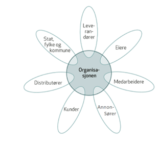

Om oss
Hei og velkommen til The Arcade Web! Vi er en bedrift som ønsker at alle skal ha tilgang til å spille spill gratis på nettet! The Arcade Web tilbyr en rekke forskjellige spill til alle aldersgrupper. Bedriften ble stiftet i 2018 av Vebjørn Drefvelin, for å gi spillutviklere et møtested for å kunne dele sine spill uten kostnad.
Målet for bedriften er dermed også å få ivrige hobby spillutviklere til å ha et møtested hvor man kan både dele og spille spill. I tillegg er det et sted hvor spillere lett har tilgjengelig spill de ikke finner andre steder.
Ansatte og Organisasjon
Til tross for at bedriften i hovedsak blir styrt av spillerne våre består den av fire hardtarbeidende og engasjerte ansatte. Vebjørn Drefvelin er daglig leder, og holder styr på bedriften, Leonora Aanesen er markedsføring- og økonomisjef, og to flinke IT-arbeidere, Tom-Vegard Moen og Aleksander Bakos, som holder hele nettsiden i gang. IT-arbeiderne har også i oppgave å kommunisere med spillerne og det er de man tar kontakt med og chatter med når man spiller.
Verdiskapningen vår skjer på mange måter, men hovedsakelig via annonser på nettsiden.
Vi er et lite team, men vi jobber sterkt sammen, og fordi vi ikke har noen fysisk butikk kan vi fokusere fullt og helt på nettsiden, slik at dere får den beste spillopplevelsen på nettet. Organisasjonsformen vår er det som kalles en linjeorganisasjon. Dette er ideelt for små bedrifter med få ansatte. Her er daglig leder øverste sjef, og både IT og markedsføring svarer til ham. I praksis er bedriften vår en “distributør” av andre spillutviklere sine spill, slik at vi ikke trenger ansatte som lager spill til nettsiden.